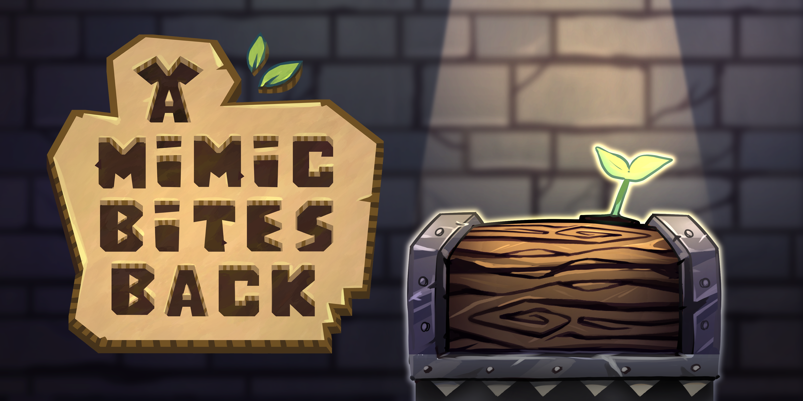
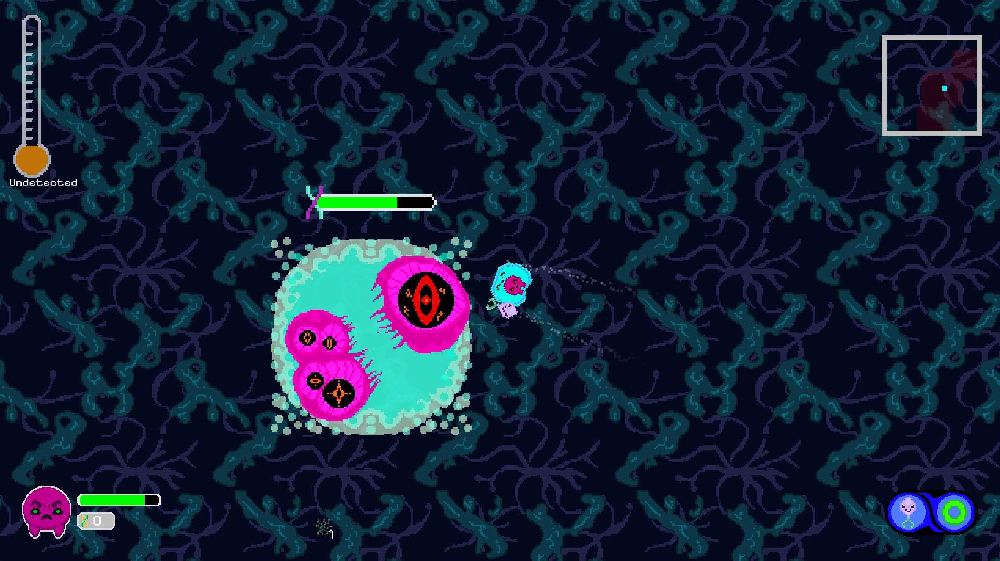
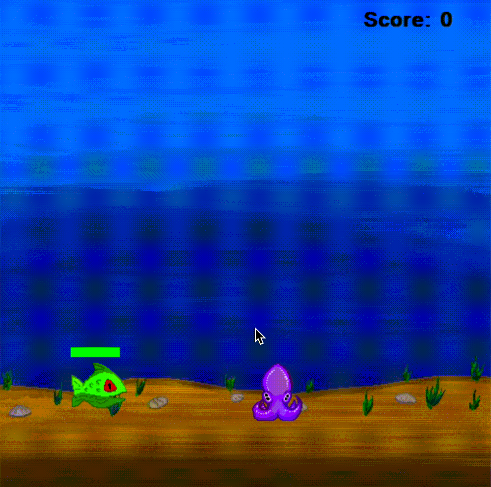
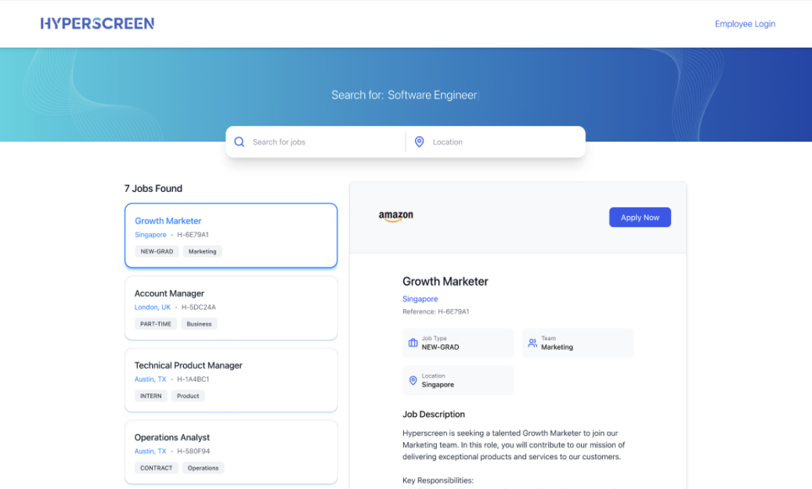
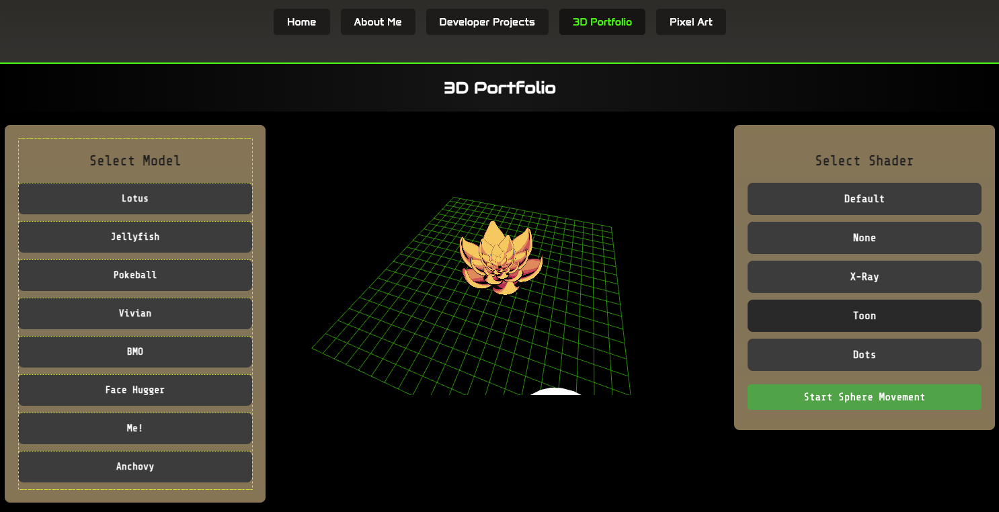
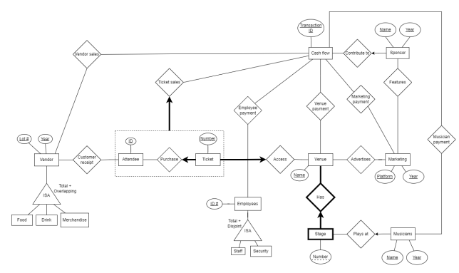
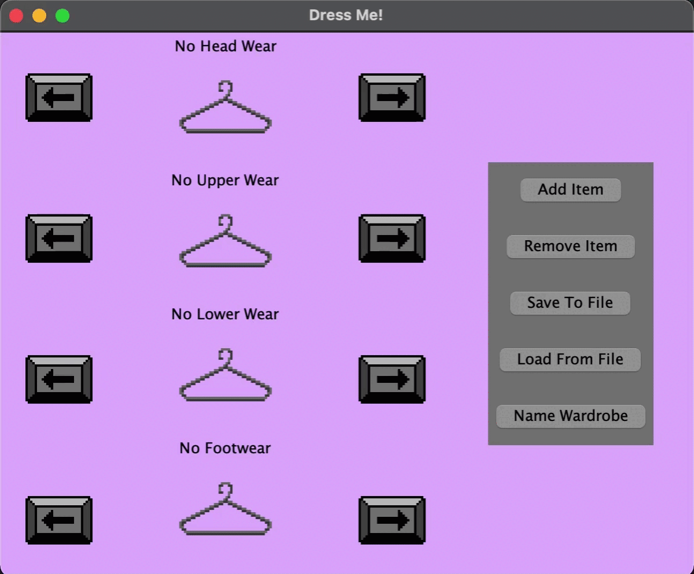
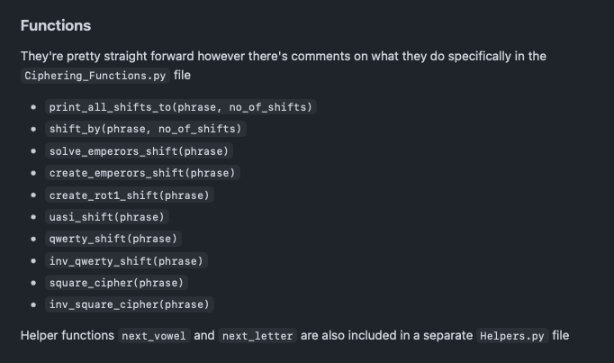

Games

A Mimic Bites Back
Jun. 2025 - Jul. 2025
Technologies: Unity, C#
A 3D isometric game where you play as a Mimic, defending your dungeon against humans!
Play on Itch.io
Amoebash
Jan. 2025 - Apr. 2025
Technologies: OpenGL, C++
Led a 6-person team in building a custom 2D game engine supporting procedural generation, SAT collision, parallax backgrounds, and instanced based rendering. Developed a rogue-like game as a proof of concept, which was selected as runner-up out of 26 teams, judged by industry professionals

Squiddy (Minigame)
Jun. 2020
Technologies: Python, Pygame, Procreate
A 2D platformer minigame to showcase some early pixel assets
View on GitHubProjects

HyperScreen
Jan. 2025 - Apr. 2025
Technologies: Django + DRF, Next.js, Postgres
A Resume Screening tool for an Industry Sponsor (Amazon) as part of CPSC319
View on GitHub
3D Model Viewer
Feb. 2025
Technologies: JS, OpenGL, GLSL
A 3D model viewer that showcases my models along with GLSL shaders

Music Festival Manager
Jul. 2023 – Aug. 2023
Technologies: Oracle, SQL, PHP, HTML, Git
A database management system for organizing and querying music festival data.
View on GitHubFull-Stack Querying Application
Sep. 2023 – Nov. 2023
Technologies: JavaScript, React, Vuetify, Express
Developed a query engine for dataset analysis using a recursive tree structure, with a RESTful backend in Node.js and an intuitive frontend in Vuetify.
View on GitHub
Dress Me!
Jan. 2022 – Mar. 2022
Technologies: Java, Java Swing
Dress Me is a wardrobe tracker that records clothing items and suggests outfit combinations, inspired by the "Clueless" digital closet.
View on GitHub
Ciphering Functions
Jul. 2018
Technologies: Python
A Python library with classic ciphering functions
View on GitHub